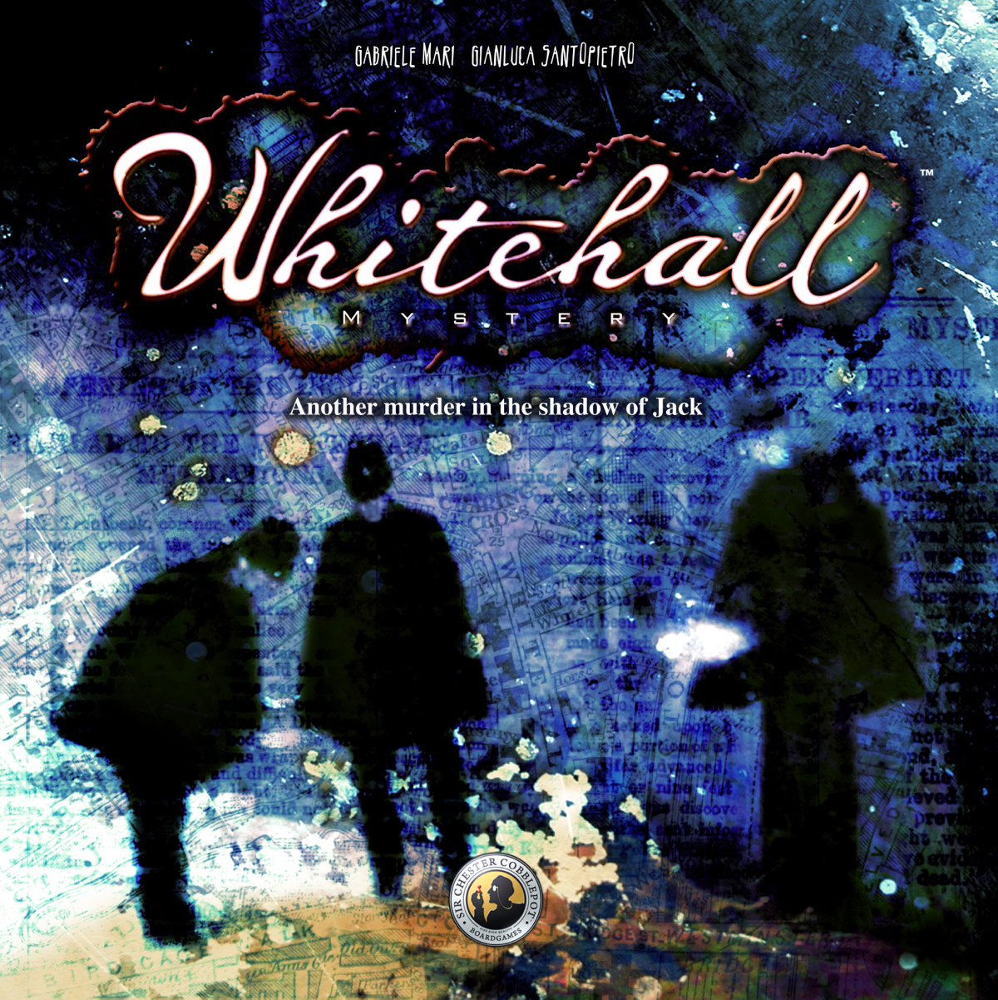

This week, Board Crazy reviews Whitehall Mystery, the newest addition to the Letters from Whitechapel series. Whitehall Mystery is designed by Gabriele Mari and Gianluca Santopietro and published by Fantasy Flight Games. In this game, Jack is back but with a twist. He’s murdered again, but is now leaving a trail of evidence, the victim’s limbs. Can the detectives catch him before he dumps all four? Check out our reviews of Whitehall Mystery below!

D reviews Whitehall Mystery
 (Author’s
note: this review is meant to accompany our gameplay video and will not
go in-depth on the game’s rules. If you’re interested in learning how
the game is played, please watch the video. It’s not bad.)
(Author’s
note: this review is meant to accompany our gameplay video and will not
go in-depth on the game’s rules. If you’re interested in learning how
the game is played, please watch the video. It’s not bad.)
The premise for Whitehall Mystery, the new sequel to Letters from Whitechapel, is based on another real-life murder mystery that sprung up in London in the wake of Jack the Ripper. Instead of a bunch of murders happening over a series of nights, this time there is only one body, with various limbs being placed near the construction site of New Scotland Yard. The game still refers to the murderer-player as “Jack,” presumably for the sake of convenience, as it is not believed that Jack the Ripper was responsible for this murder, despite some similarities. And given that refrigerators weren’t a thing yet, the game designers reasonably decided that the murderer would have to dispose of the body parts quickly, which informs the major change to the way the game is played.
Whitehall Mystery’s game board, which is smaller than Letters from Whitechapel’s board. This helps the game play quicker.
Instead of Jack picking a murder site every round and then trying to maneuver back to his hideout, now he has drop spots he must reach within a single night. These, like the hideouts of Whitechapel, are predetermined by the Jack player and may be reached in any order. To give Jack a bit of help, the police start the game in the center of the board, but now there is no resetting between rounds, so if the police get on Jack’s trail, there’s a good chance they will stay there. This continuous chase, combined with a slightly smaller game board, leads to a much quicker playtime than you would usually get with Whitechapel. I still maintain that these games would make more sense with some sort of timing mechanism for the investigators, but overall Whitehall Mystery is a much more manageable time commitment than Whitechapel was.
The reduced player count is also responsible for the quicker game. Instead of five investigators on the trail, now there are only three. This is a shame for larger groups who were fans of the original, but overall I think this was a change for the better. The new investigators are also a bit more fleshed out, each coming with a special ability they can use once per game. The abilities are considered optional in the rulebook, but given that they are printed on the player tokens, it seems like using them is the intended way to play. I’m just not convinced by their balance. The new map, being a bit more compact, seems to favor the good guys. I obviously haven’t crunched the numbers, but it feels like there are fewer good places for Jack to get some distance from his pursuers, so giving them extra movement options makes things even harder for the Jack player. Jack is also provided a couple of optional abilities, but neither feels as useful.
Jack’s special movement tokens. The ‘Boat’ is a new addition to the series – it allows Jack to move across any block of water.
My biggest disappointment is with the new “boat” feature. There are a couple of bodies of water on the map, including the River Thames, and boats are a new movement option for Jack that work similarly to the alley tokens. Unfortunately, I’m not sure they’re actually useful, since they basically telegraph Jack’s location. The waterways are only present on the bottom half of the map, so using a boat early in the game will cut the board in half for the investigators. Towards the end of the game, the good guys will know which quadrant you need to reach and will likely be crowding the area, so using a boat is basically an act of desperation. And to actually use them requires an extra couple of moves, which are all too precious for the Jack player.
Overall, I’m of two minds when it comes to Whitehall Mystery. On the one hand, this new game is definitely a tighter experience without losing any of the original game’s nail-biting tension. But on the other hand, I also feel like some of the new features are a little half-baked. It’s definitely something that I will recommend, but I think a few small tweaks could have made this an even stronger game.
D’s Rating: Three and One-Half Stars out of Five.
Will Reviews Whitehall Mystery
 Fantasy
Flight Games’ Letters from Whitechapel is up there with my favorite
board games – I like it that much. So when I heard that the publisher
was putting out a follow-up to Letters, and that it was a standalone
title, I immediately became intrigued. When the day came and we finally
played it, I wasn’t disappointed. Whitehall Mystery is a really
entertaining game and a worthy successor to Letters from Whitechapel,
but is it better than its predecessor?
Fantasy
Flight Games’ Letters from Whitechapel is up there with my favorite
board games – I like it that much. So when I heard that the publisher
was putting out a follow-up to Letters, and that it was a standalone
title, I immediately became intrigued. When the day came and we finally
played it, I wasn’t disappointed. Whitehall Mystery is a really
entertaining game and a worthy successor to Letters from Whitechapel,
but is it better than its predecessor?
In regards to its physical components, Whitehall Mystery is a step up in many ways. The board is smaller than its predecessor’s, but that’s not necessarily a bad thing; it’s just as visually appealing and well made. The tokens that represent Jack’s special movements are much improved, as they are larger and feature useful explanations of their mechanics. The only step down may be the build quality of the miniatures of Jack and the investigators. While they’re undoubtedly more detailed, they’re also plastic. I think I prefer the less detailed, wooden pieces included in Letters from Whitechapel.
All of the components included in the Whitehall Mystery box.
At the end of the day, build quality is hardly the most important factor when considering a board game. Instead, it all comes down to one simple question: Is it fun? After playing Whitehall Mystery several times, I definitely can state that this game is very fun. One of the best decisions the designers (Gabriele Mari & Gianluca Santopietro) made was to shorten the playtime by removing the downtime between rounds. Letters from Whitechapel plays out over several nights, and after each night, there’s a break as the board is reset. In Whitehall Mystery, there is no break; the gameplay is seamless and sessions move at a break-neck pace (at least compared to Letters).
While the pacing is definitely an improvement, it does carry along a number of negative side effects. One of the worst ones is that the game, like its predecessor, is irritating at times for whoever is playing as Jack the Ripper. Since Jack has more control over where he’s traveling to and when, planning becomes even more difficult. To explain – before, the player using Jack could strategize while the other players discussed their next move. Now, that player is forced to wait, listen, and recalculate after each detective’s turn. This is basically the same problem that Letters from Whitechapel had, except now there’s even more for Jack to consider and contemplate, so waiting to do so while the investigators deliberate is that much worse. That leads me into another issue I had with the shortened runtime, but this one is more minor. In Whitehall Mystery, the players assuming the roles of the investigators will want to discuss their deductions in length, the same way they would if they were playing Letters. However, the new rules and mechanics make it so that there’s less time to have such discussions, unless you’re playing with an extremely patient Jack. In other words, Whitehall Mystery changed a lot for Jack the Ripper but very little for the detectives, and this is occasionally problematic.
The detectives have special abilities that can be used once per game. Utilizing these abilities is optional.
There are a handful of new things for the investigators though, including a few, once-per-game, special abilities. For instance, one of the policemen can traverse bodies of water like how Jack can cross through alleyways. New abilities such as these are really great, especially when executed properly. Unfortunately, they weren’t necessarily balanced properly. In the several sessions of Whitehall Mystery we’ve played, the detectives’ special abilities far outweigh Jack’s special abilities in regards to effectiveness. In fact, too much in Whitehall Mystery favors the investigators. The new board seems easier to get around for the good guys, with some double-movements covering multiple blocks. Still, this is not a big deal if you tinker with the rules and find the right kind of a balance for your group. Yes, it would’ve been nice if the new special abilities were more even-handed, but Whitehall Mystery is perfectly playable without them. Actually, it’s better without them.
At the end of the day, if you strip away all of the new abilities of Jack and the detectives, you’ll be left with a quicker, smaller version of Letters from Whitechapel. I like Letters so much that I probably would’ve purchased Whitehall Mystery if it had been merely a shortened version of its predecessor. Luckily it’s not, since there’s a new twist when it comes to the gameplay for Jack, and new abilities for the police. In my eyes, all of that stuff is a nice bonus for me, so I’m grateful. I just wish some of the new features had been balanced a bit better, but even with those flaws, I still wholeheartedly recommend Whitehall Mystery to anyone who owns Letters from Whitechapel. Heck, I recommend it to anyone who’s interested in deduction board gaming. Is Whitehall Mystery better than its predecessor? No, it’s not. But while I chose to focus a bit more on the negatives here, please don’t let that mislead you. This game features most of the same positives that Letters from Whitechapel does, so our reviews of that game should shed some light on the better aspects of this series. Speaking of this series, I hope they do another! Overall, Whitehall Mystery is a worthy entry.
I give Whitehall Mystery a: B
Graham reviews Whitehall Mystery
 This
week, we head back to 19th century London once again to try and hunt
down the deranged murderer, Jack the Ripper. Whitehall Mystery is
Fantasy Flights’ newest addition to their Letters from Whitechapel
series. Letters from Whitechapel is a personal favorite of mine, and you
can check out my review here.
In Whitehall Mystery, Fantasy Flight Games did a fantastic job of
preserving the overall feeling and satisfaction you get from playing
Letters from Whitechapel, while still cultivating a distinctly different
experience. Whitehall Mystery plays more quickly, adds some new
elements, and levels the playing field a little.
This
week, we head back to 19th century London once again to try and hunt
down the deranged murderer, Jack the Ripper. Whitehall Mystery is
Fantasy Flights’ newest addition to their Letters from Whitechapel
series. Letters from Whitechapel is a personal favorite of mine, and you
can check out my review here.
In Whitehall Mystery, Fantasy Flight Games did a fantastic job of
preserving the overall feeling and satisfaction you get from playing
Letters from Whitechapel, while still cultivating a distinctly different
experience. Whitehall Mystery plays more quickly, adds some new
elements, and levels the playing field a little.
The main difference between the two games is Jack’s goal. In Letters from Whitechapel, Jack is trying to commit five separate murders over the course of four different nights. Each night, Jack murders and then tries to get back to his hideout before the detectives catch him. In Whitehall Mystery, jack has committed one murder and is trying to leave a trail of evidence throughout the district. The evidence is rather gruesome – it’s the victim’s limbs. If Jack can successfully place these limbs in his predetermined locations before the detectives catch him, he wins.
Jack’s
movement track sheet. At the top of this sheet, the person playing as
Jack would mark down the four locations at which they want to drop the
body parts.
In Letters from Whitechapel, there are four distinct rounds, and after each round the board changes significantly, and any information you collected from the last round is essentially useless. In Whitehall Mystery, the transition between rounds is very seamless. All of the players stay in position, and only the clue markers from the previous round get removed. This means the entire game plays as one round from start to finish, while in Letters from Whitechapel, each round almost felt like you were starting a brand new game. This, in addition to a smaller game board, significantly decreases the gameplay time. I think we finished our game of Letters from Whitechapel in a little over two hours, while Whitehall Mystery was maybe 45 minutes total. The length of Letters from Whitechapel didn’t bother me, but I would be lying if I said I didn’t appreciate a quicker version of it.
There is no doubt that Whitehall Mystery is a smaller game overall, but that doesn’t mean they took anything important away from Letters from Whitechapel. In fact, they added some new elements to the game that definitely make it more intriguing. First, they gave special abilities to the detectives. The detectives can use these special abilities once per game, and these abilities are explained on the individual detective cards. There’s also a dog, Smoker, that works alongside the journalist Jasper T.C. Waring. He gives Jasper an additional special ability to use once per game. These special abilities are optional, but I think they provide a nice twist to the original gameplay. I do recommend that if you’re playing with the detectives special abilities, you also allow Jack to play with some of his optional mechanics. In addition to the special abilities, they added the ‘boat’ special movement. This special movement allows Jack to move between any two blue circles on the same block of water. If you decide to allow the detectives’ special abilities, then Sgt. Arthur Ferris can use this type of movement as well.
The journalist, Jasper T.C. Waring and his dog, Smoker.
Another thing I noticed is that the game seems to have been balanced a little bit better than Letters from Whitechapel. In our playthrough of that game, Will and I barely won, and we had a significant advantage because we were playing one of the rules wrong. There’s no way we would have been victorious if we had been playing correctly. I always feel at a slight disadvantage when playing as a detective in Letters from Whitechapel. In Whitehall Mystery, we definitely made sure we were playing properly, and it felt more balanced overall. I think in our playthrough of Whitehall Mystery, Jack was only one or two spots away from successfully placing the last limb and winning the game.
Overall, Whitehall Mystery is a great take on its predecessor, Letters from Whitechapel. The designers found a way to introduce a new game that plays very differently but keeps many of the elements that I and countless others loved from Letters from Whitechapel. I will continue to play both games depending on my mood, and look forward to any games that are a part of this series. I give Whitehall Mystery two thumbs up.
Leave a Reply
You must be logged in to post a comment.